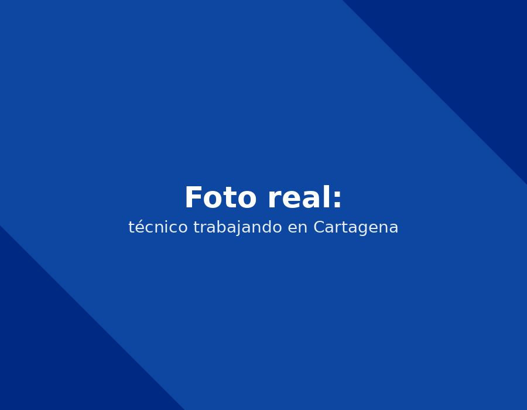

Atendemos el sector de hoteles y edificios exclusivos junto a Bocagrande. Reparamos, mantenemos e instalamos neveras y nevecones de todas las marcas a domicilio, con tiempo estimado de llegada entre 30 y 45 minutos.

Llame directamente o escriba por WhatsApp al mismo número para agendar su servicio técnico Neveras en El Laguito en Cartagena. Respondemos en minutos.
☏ Escribir por WhatsAppAl igual que Bocagrande, El Laguito está totalmente expuesto a la brisa marina. Atendemos tanto apartamentos residenciales como pequeños negocios de hospedaje que necesitan sus neveras y nevecones funcionando sin interrupciones.
Atendemos El Laguito con el mismo protocolo que usamos en toda Cartagena: diagnóstico honesto antes de cobrar, repuestos 100% originales de cada marca y garantía escrita sobre la reparación. La diferencia principal entre sectores no es la calidad del servicio, sino la logística: en El Laguito nuestro tiempo estimado de llegada es entre 30 y 45 minutos, lo que nos permite resolver la mayoría de los casos —independientemente de la marca— en una sola visita.
Si no está seguro de qué marca tiene su nevera o nevecón, no es necesario que lo sepa de antemano: nuestro técnico puede identificarla y diagnosticar la falla directamente en su domicilio en El Laguito. Reparamos Samsung, LG, Electrolux, Whirlpool, Mabe y Haceb con el mismo nivel de exigencia, usando siempre los repuestos originales correspondientes a cada fabricante.
Elige tu marca para ver fallas comunes y agendar tu servicio.
"Excelente atención a domicilio, el técnico llegó puntual y resolvió el problema en la misma visita."
— Cliente verificadoEl tiempo estimado de llegada a El Laguito es entre 30 y 45 minutos desde que confirmamos la cita por WhatsApp.
Sí, atendemos tanto casas como apartamentos y edificios en El Laguito, incluyendo coordinación con administración cuando el edificio lo requiere.
Cuéntanos la marca y la falla de tu nevera. Te confirmamos por WhatsApp en minutos.
☏ Escríbenos por WhatsApp